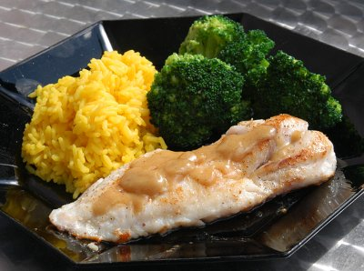

| Zutaten für 4 Personen: | |
| 800 g | Rotbarben |
| 300 g | Carolina Reis |
| Salz | |
| 1 Sachet | Safranpulver |
| 500 g | Broccoli |
| 2 dl | Fischfond |
| 1 Tl | Rosmarinpulver |
| 1 dl | Apfelwein |
| 1/2 dl | Rahm |
| Pfeffer | |
| 2 El | Olivenöl |
| Rosmarinzweig | |
Reis in Salzwasser kochen und das Safranpulver beifügen.
Broccoli in Salzwasser knackig kochen.
Fischfond aufkochen, Rosmarin und Apfelwein beifügen und gut einkochen. Mit Rahm verfeinern und würzen.
Rotbarben filetieren. Fischfilets würzen und braten.
Auf der Sauce anrichten, Reis und Broccoli dazugeben und mit Rosmarin garnieren.
Migros Rezepte vom Küchenchef
Recht einfach zu kochen und gut. Die Sauce war eher langweilig. Aber was soll man schon unter Basissauce
für Fisch verstehen? Der Fischhändler hatte nur ganze Rotbarben. Ob sich die ideal für die
Bratpfanne eigenen? Ich wusste nie so genau ob der jetzt ganz durch ist. Ferner war mein Fisch recht
grätig was das Essen nicht sehr einfach machte. Durch das langsame Essen wurde aber alles kalt.
Möglicherweise wäre der Fisch aber gut geeignet für im Sommer auf dem Grill? Richard
Eigenmann, 13.2.2000
Da weder die Migros noch das Internet eine Ahnung haben was die Basissauce für Fisch sein soll habe ich das Rezept umgestellt. Ich habe eine Sauce mit Fischfond gemacht und die war richtig lecker. Statt Rotbarbe gab es Rotbarsch aber der war auch lecker. Als Nachteil sehe ich, dass ich anschliessend 4 Pfannen abwaschen musste. RE 2.4.2010
@LINKBACK_TAG@ @WAKELOCK@